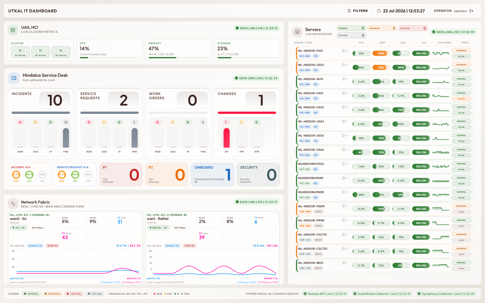
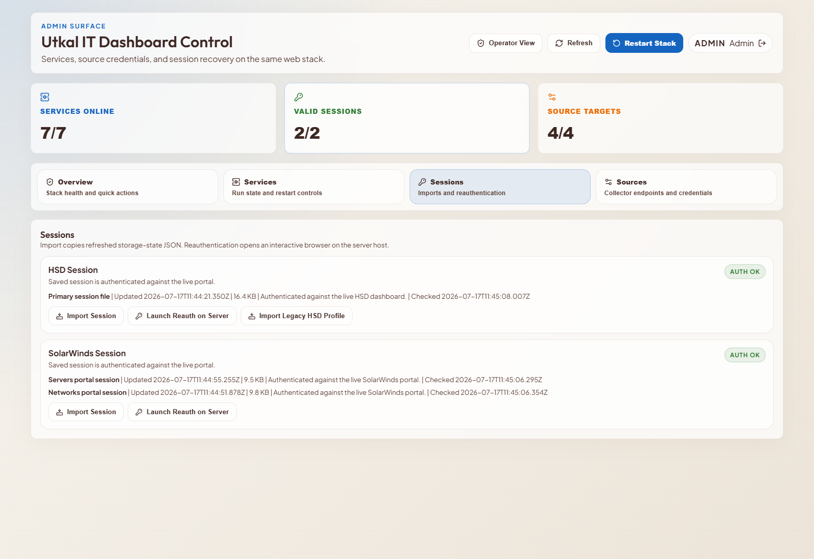
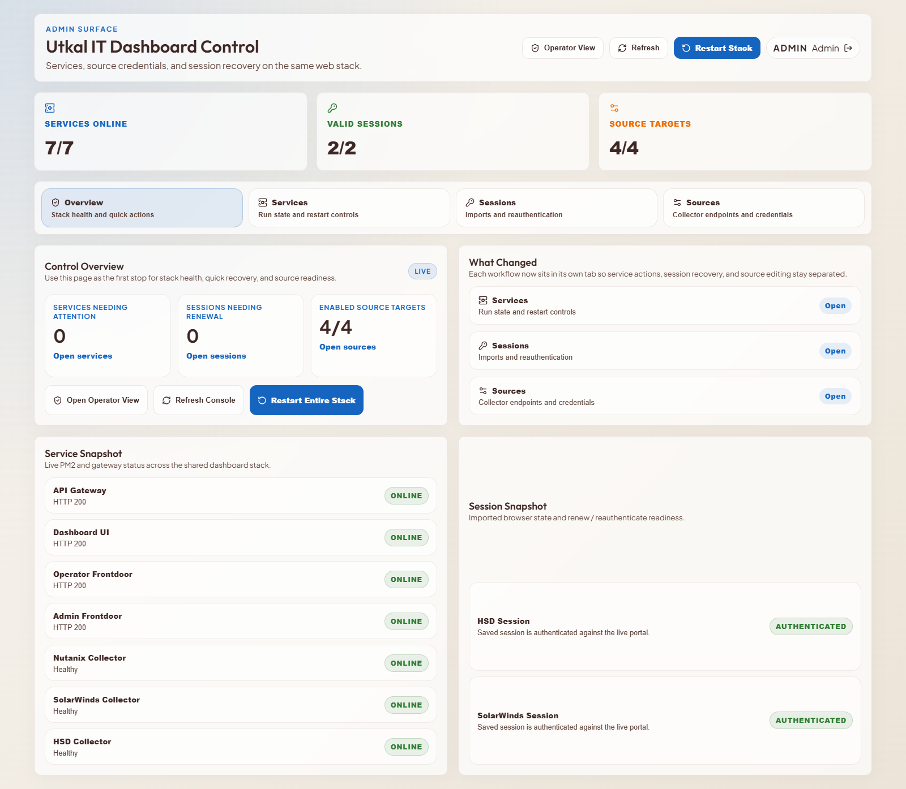

Operational wallboard and admin control surface for UAIL IT operations, combining live infrastructure, service-desk, and network telemetry into a single managed web stack.
The dashboard must not fabricate values during normal operation. If a collector fails, the system keeps showing the last successfully synced data together with the last synced time for the affected card or section.

One-page engineering wallboard at 1920x1200, with a responsive stacked layout for tablet and mobile access.
This is a status-preserving operational dashboard, not a predictive analytics surface. Review and audit discussions should focus on freshness, source attribution, and recovery controls rather than whether missing data is synthesized.

The application is defensible for an internal ISMS review when positioned as a controlled, LAN-hosted operational dashboard on a dedicated server with documented compensating controls and operational procedures.

The UAIL IT Dashboard is now in a materially stronger state: the UI is operationally useful, the runtime model is simpler, the trust model is explicit, the deployment path is defined, and the information-security position is documentable. The remaining work is primarily hardening and control maturity rather than uncertainty about what the product is or how it operates.